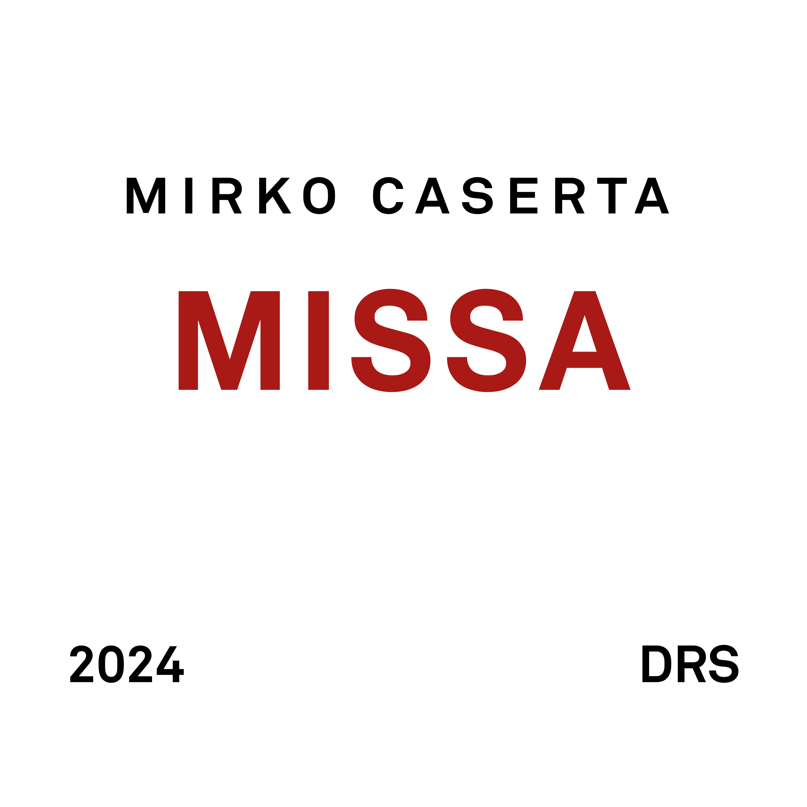

Missa

Long Story Short
Questo è un album di musica improvvisata. Il suono è quello dell'organo di Hans Zimmer in Interstellar. L'ispirazione è chiaramente ecclesiastica. Ho provato a immaginare delle melodie sui titoli dei brani e a svilupparle scimmiottando (male) lo stile contrappuntistico.
Short Story Long
Il mio primo incarico da musicista è arrivato piuttosto presto. Credo fossi in prima media quando il mio insegnante di pianoforte mi propose di prendere il suo posto come organista nella chiesa del paese.
Non avevo mai studiato bene il solfeggio, la mia capacità di lettura era davvero rudimentale e questo mi rendeva nervoso ma la musica di chiesa non richiede grandi capacità esecutive: basta un po' d'orecchio per gli accordi e ci si può facilmente districare nella maggiorparte dei canti.
Il mio compito era quello di accompagnare il coro durante la funzione della domenica mattina. A volte facevo delle prove pomeridiane con il coro durante la settimana ma questa abitudine ebbe vita breve per via della predisposizione degli adolescenti a dedicarsi ad attività come zuffe e goffi tentativi di riproduzione sessuale.
La mia attività da organista non durò molto. Una volta, durante le cresime, ebbi la brillante idea di usare il sintetizzatore per suonare alcune melodie e questa cosa non piacque per nulla al vescovo. Il parroco mi spiegò che in chiesa erano ammessi solo strumenti acustici e l'organo. Potevo mai tollerare che si mettesse bocca sulle mie scelte artistiche? Fu così che la mia collaborazione con la parrocchia ebbe bruscamente fine.
Ricordo anche che una volta spaccai il muso ad un ragazzo del coro perché ebbe l'ardire di commentare in modo inappropriato gli LP che quel giorno portavo con me: Invitation di Jaco Pastorius, 8:30 dei Weather Report e qualcosa di Larry Carlton se non ricordo male. Poi gli chiesi scusa e mi feci prestare i suoi CD di Fronte del Palco per tentare una riappacificazione musicale totalmente finta da parte mia.
Ad ogni modo, per almeno due o tre anni ho partecipato attivamente all'attività musicale della comunità della parrocchia. Conoscevo i brani più popolari e sapevo quando inserirli nelle varie sezioni delle funzioni religiose. Sono stato un discreto ragazzo di chiesa ma ho sempre visto con distacco i tanti aspetti della pratica cristiana che fanno visibilmente a cazzotti con la realtà e il mio approccio scettico e razionale alle cose della vita.
Già a quei tempi si era fatta strada in me l'idea che non esiste un dio e che le tante cose insensate delle religioni sono tali non perché io non sia in grado di comprenderle o per mancanza di fede ma semplicemente perché sono e restano insensate e contrarie alla logica e alla ragione a disposizione di qualunque persona minimamente istruita.
Tutto questo per dire che in qualche modo questa musica per me è un ritorno alle origini. Mi sono divertito a tornare sulla panca dell'organo, seppure virtuale1.
L'album esce su tutte le piattaforme digitali venerdì 20 settembre 2024 alle cinque del pomeriggio:
lo strumento è The Legend HZ e il preset si chiama Interstellar